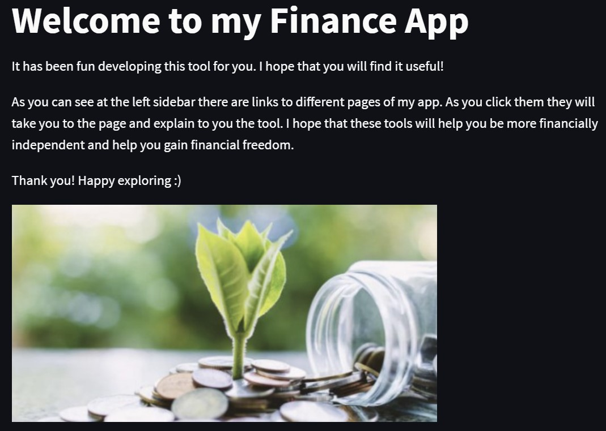
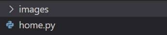
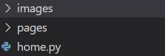
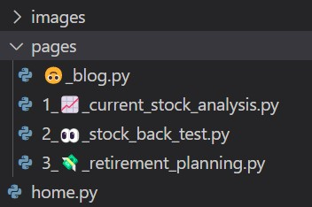
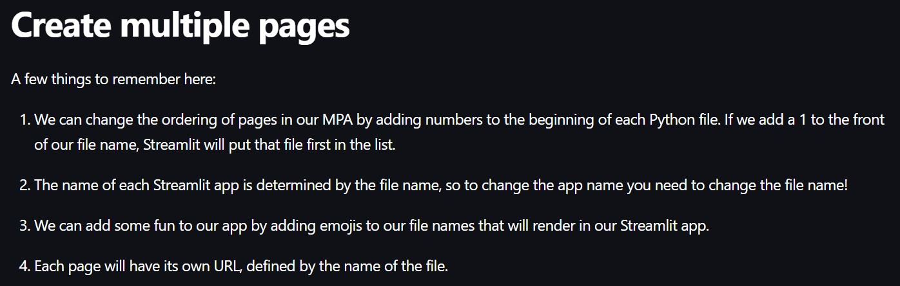
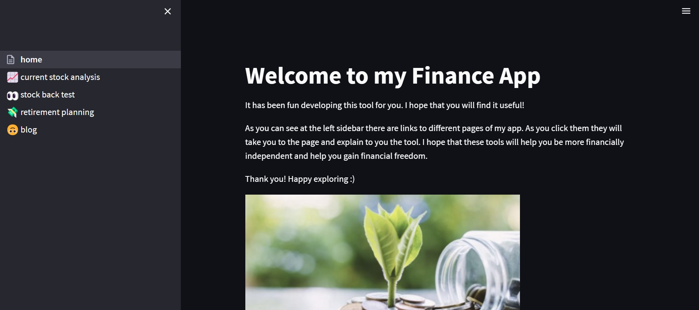
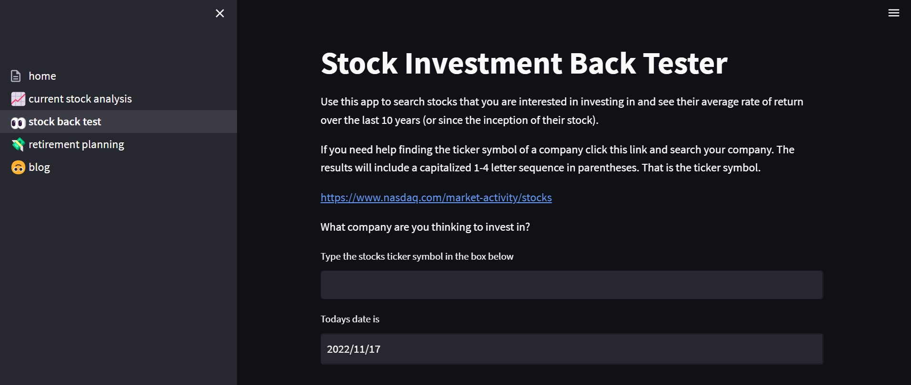

I am excited to share that I have learned how to create a multi-page streamlit app! This helps a me gather all my financial streamlit apps into one space, allowing more convenience for the user in accessing and navigating my resources that I have created.
Now, in previous blog posts I have talked about my stock streamlit app and my stock back tester. Additionally, I have made a retirement planning app that helps users see the future value of their investments at the time they plan to retire. To make this easier for users, and to expand my streamlit knowledge and skills, I wanted to combine all of these into a single space. For this reason, I learned how to make a multi-page app and I want to share this knowledge with you.
Now the first step is to make a file for the home page of your app. This is the file that users will first see and to which all of your apps will be attached to as additional pages. This is very easy as you can simply create a home.py file. Now when you run streamlit you will run from your home.py file as the basis of the multi-page app like so:
streamlit run home.pyNow, if you have not added any code to your home.py it will show up blank. I added simple streamlit code like st.title() and st.write() to put some information on my home page. Here is what mine looks like:

You can see that I have an image on my home page. This is an easy add. I created an images folder at the same level as my home.py file. This is where you can add any images that you’s like to use.

Then in my home.py file I used this code:
st.image("images/file_name.jpg", caption = "", width = 500)This follows the path and pulls the image in. You can include a caption if desired and adjust the width of the image. Easy money.
Now, how can we attach all of our built apps to this? Luckily it is super easy! Create a pages folder that is at the same level as your home.py file (the same way you did if you made an images folder).

Then, throw in each of your python files that contain your different apps into that pages folder. Here is an example of what mine looks like:

Here is a picture note from streamlit documentation about creating multiple pages:

Now when we reload the streamlit app in our browser it will show a left hand side bar containing the different files as their own pages of the app.

You will see that by clicking on these pages (which consist of streamlit apps that I have already made) that they will be shown on the screen and usable just as they could by themsleves.

Super cool! Now we have all of our apps into one space!